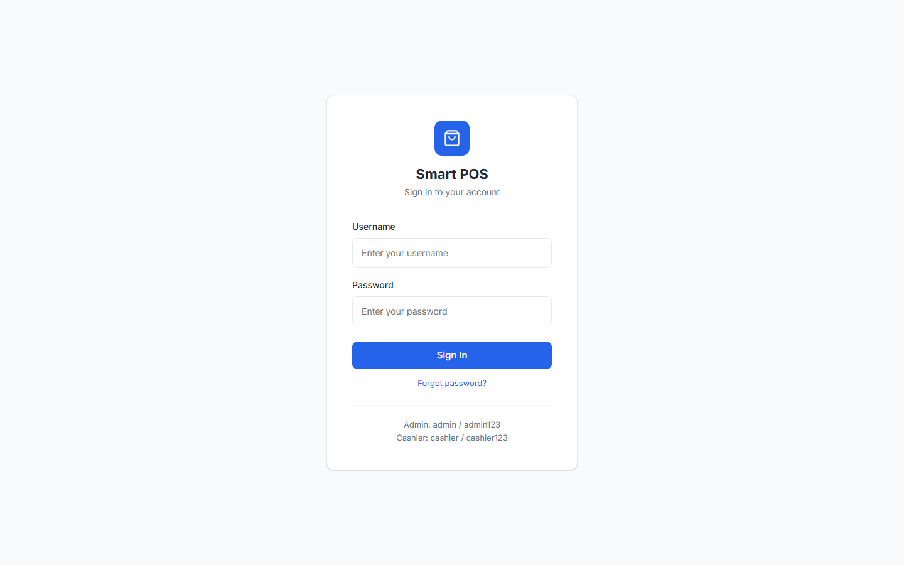
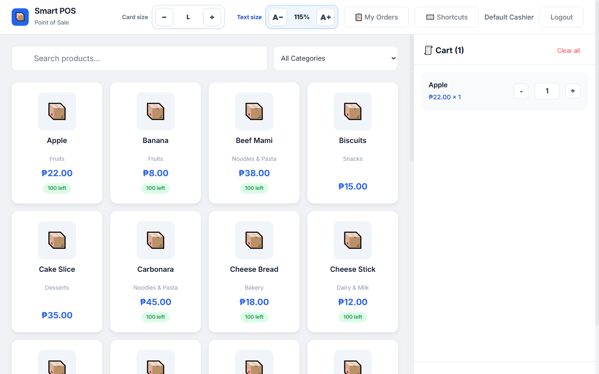
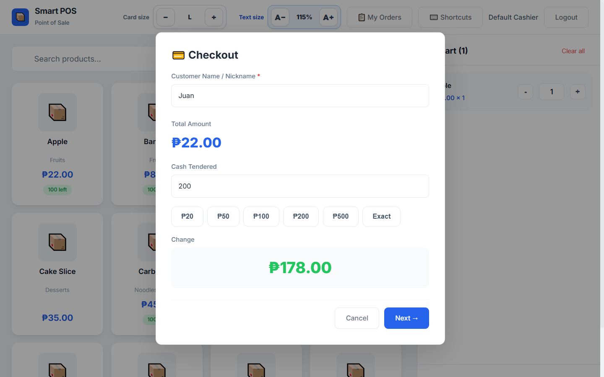
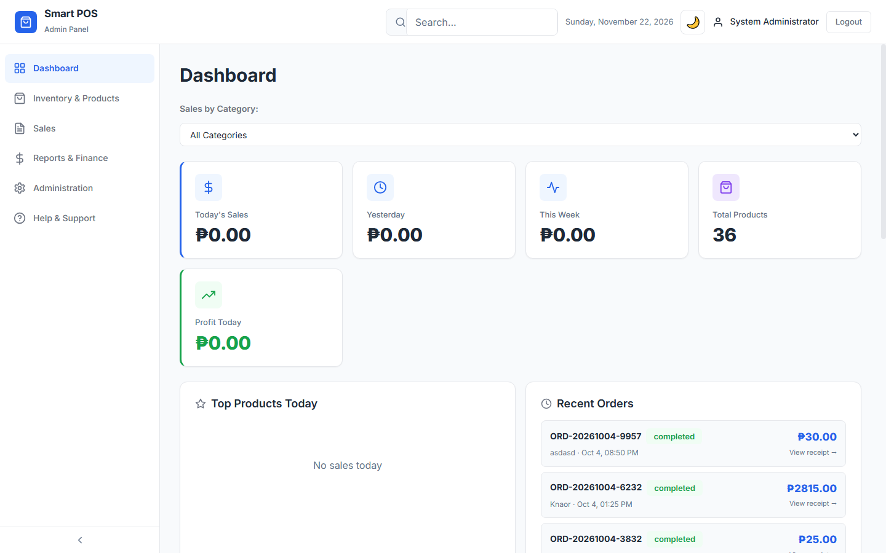
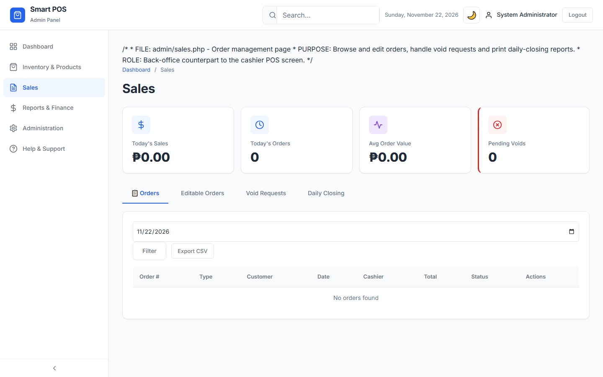
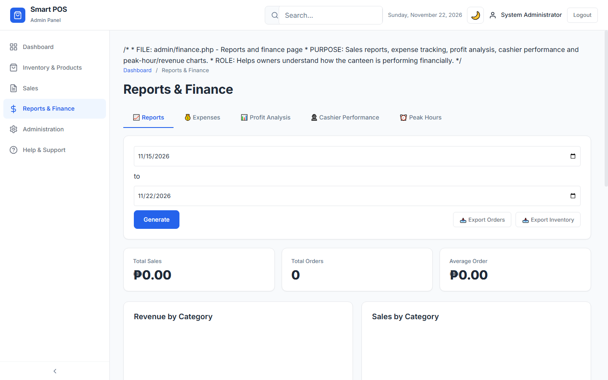

Smart POS Canteen System for Talisay City College
A faster, more accurate way to run the school canteen - from product selection and instant change calculation to live sales, inventory and finance reports.
This web edition shows the real screens and documentation. The portable POS itself runs locally on a computer and is not hosted here.
Evaluated by 200 students, personnel and canteen staff. Ordering, inventory, sales and user-friendliness were all rated Highly Acceptable on the study's four-point scale.
The problem and the solution
What inspired the project and what the finished system does about it.
Slow lines, manual tallying
Canteen staff handle many small orders at once. Writing orders by hand and counting change slows the queue down, and sales totals are only known at the end of the day.
One screen for every sale
Cashiers tap products, adjust quantities, choose dine-in or take-out and get the exact change instantly. Every sale updates stock, receipts and dashboards automatically.
Rationale of the program
"A Smart Point-of-Sale (POS) Canteen System can make canteen operations faster, more organized, and more convenient for students and staff at Talisay City College." The system replaces handwritten orders and manual counting with recorded, searchable and reportable transactions.
How it works
The same three-stop tour used in the capstone demonstration.
Sign in
Admin and cashier accounts open the right workspace, with role-based access and optional two-factor verification.
Take an order at the POS
Search or filter products, add variants, set dine-in or take-out, then accept cash and see the exact change.
Review sales in admin
Check the dashboard, approve void requests, monitor low stock and close the day with sales and finance reports.
What it can do
Core features demonstrated in the working prototype.
Fast POS checkout
Searchable product grid, cart, variants and one-tap cash buttons for quick transactions.
Stock & variants
Sizes and flavors with their own prices and stock levels; low-stock warnings on the dashboard.
Queue & tickets
Queue numbers and order tickets keep pickup organized during a rush.
Void approvals
Cashiers request a cancellation; an admin approves it, with stock and audit logs updated.
Sales & finance
Daily closing, sales charts, cashier performance, expenses and profit summaries.
Backup & restore
One-click database backups, restore tools and an environment doctor for easy setup on another PC.
Screenshots
Captured from the running application. Click any image to enlarge it.






Built with
A lightweight stack that runs from a portable folder.
Meet the team
BS Industrial Technology, Major in Computer Technology · Talisay City College · November 2026
Names are taken from the capstone manuscript cover.
Supporting documents
Both files are bundled inside this folder, so the links work without internet access.
To share the site, copy the whole canteen-pos-microsite folder - including assets/ and docs/ - to a USB drive, web host or GitHub Pages.